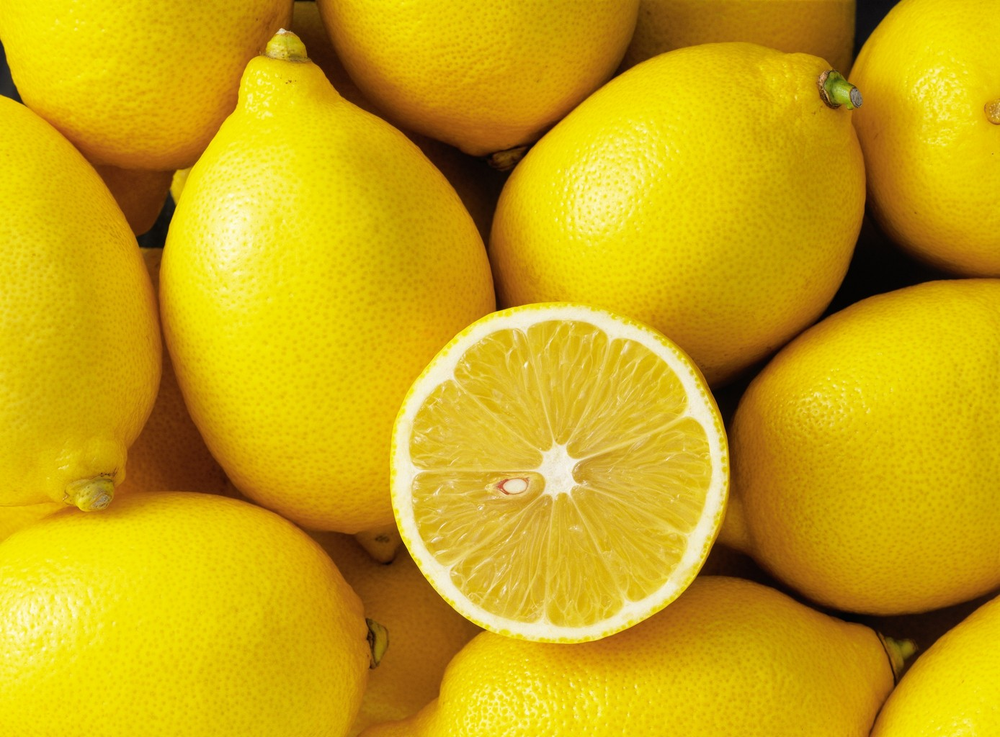
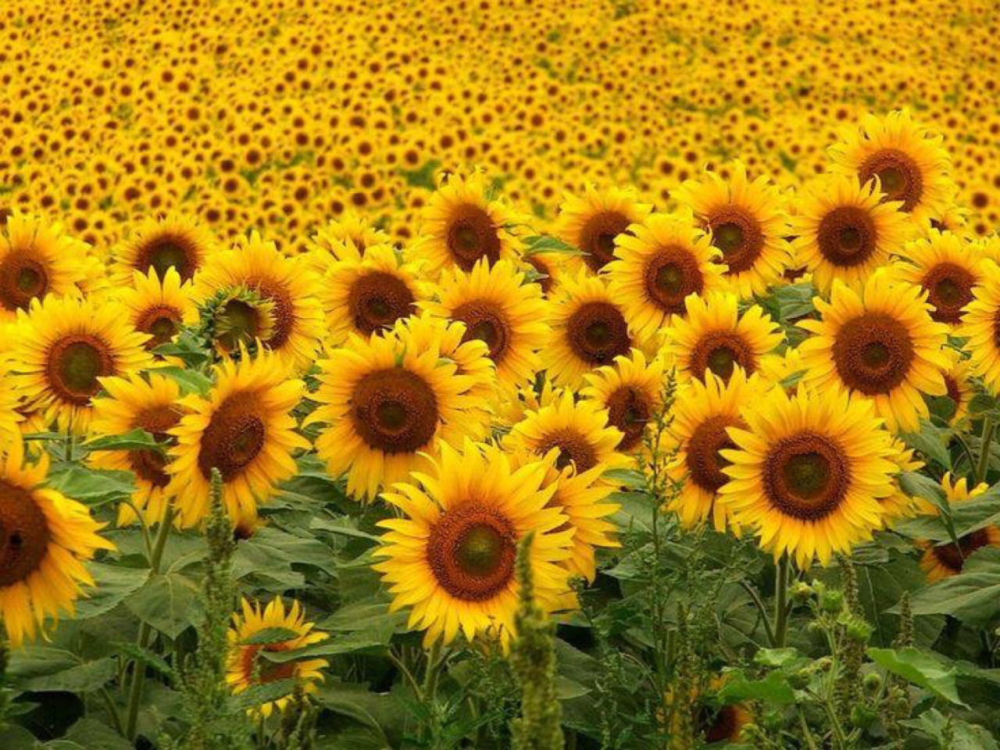

Желтый Желтый цвет достаточно своеобразен,он может восприниматься,
хорошо или же плохо,в зависимости от оттенка или самого человека.
В данном случае,оттенок у нас неприятный и вызывает ассоциации с
болезнями и чем то нездоровым.Но,если оттенок будет хорошим то,
желтый цвет будет нести лишь благополучие и позитив.Вот так он
должен выглядить.  |